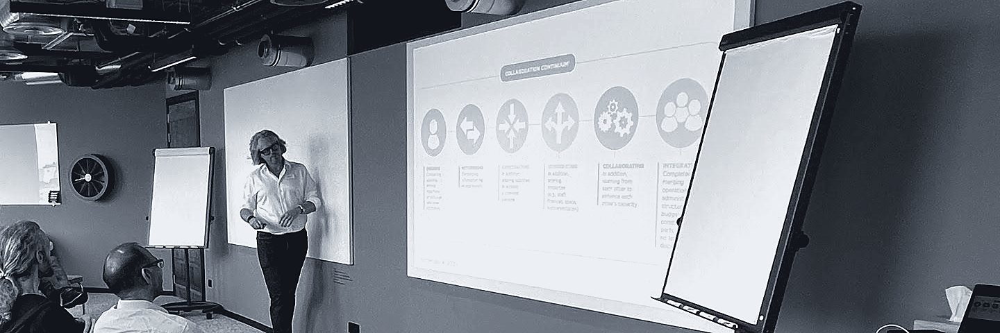
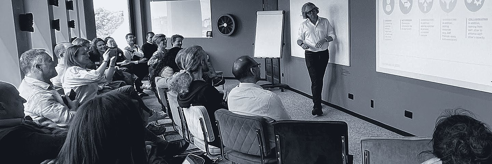
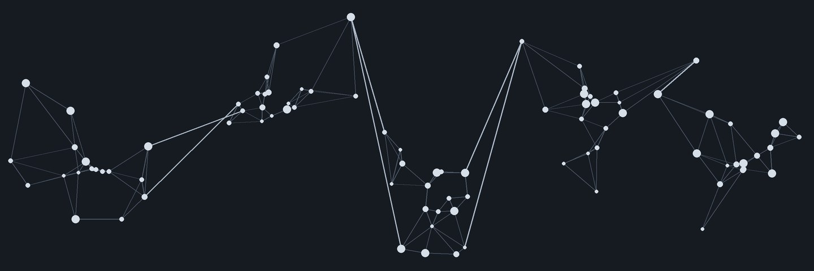

Dave

Most of the problems I'm asked to help with look like structure or process problems. Usually they're relationship problems: a leadership team that agrees in the room and drifts apart outside it, or a partnership where every organisation is doing its best and the system still lets people down.
I'm Dr Dave Yates, an organisational anthropologist (PhD, Systems Change) and systemic team coach. For over a decade I've worked with senior leaders across the Department for Transport, Network Rail, Arriva Rail London, local authorities, NHS trusts and national charities, helping them see what's really going on and change it together.
That work translates directly to the private sector. Joint ventures, client–contractor alliances, acquisitions and fast-growing firms all depend on people from different cultures making decisions together, and that is where I help.
What clients bring me
- A leadership team that isn't pulling together: slow decisions, silos, polite agreement and quiet resistance.
- A partnership or system that doesn't connect: organisations that need each other but don't trust each other yet.
- A change that isn't landing: a new structure or strategy where the culture hasn't followed.
- A merger, acquisition or alliance: two or more organisations, each with its own way of doing things, that now need to act as one.
- A new leader or new organisation: the chance to set up how people work together from the start.
How I work
I don't bring off-the-shelf solutions. I start by observing how your organisation actually works: its meetings, stories, unwritten rules and relationships. Then I use dialogue to help your people see it for themselves and decide what to do differently. Change that people make together is change that sticks.
See some of the results, or get in touch to talk about what's stuck.
Results

Department for Transport and the rail industry
Challenge: leaders across DfT, Network Rail and the wider rail industry needed to work as one system ahead of rail reform.
What I did: helped design and deliver the Connected Leaders Programme for senior rail leaders; coached Director General and director teams within the civil service; and consulted on culture change spanning DfT, Network Rail, Rail Delivery Group and the Great British Railways Transition Team.
"Dr Dave worked with us for around a year. He was instrumental in aligning the organisation towards a significant piece of change. He approaches leadership and team development with organisational strategy for real impact."
Director, Central Government
Network Rail, Wales & Western Region
Challenge: regional executive teams needed to shift culture and work across organisational boundaries.
What I did: systemic team coaching with executive teams, systems-thinking workshops on railway improvement, and support to develop inclusive leadership practice.
South Tees Systems Leadership Programme
Challenge: people facing multiple disadvantage move between many services, and the services weren't joined up around them.
What I did: co-designed and facilitated an eight-session programme bringing together leaders from 16 organisations, including Middlesbrough and Redcar & Cleveland councils, the NHS and local voluntary sector services. We built trust first, mapped the system through real case studies, assessed system maturity on prevention, and agreed a shared prevention priority to work on together.
Arriva Rail London
Challenge: a private-sector train operator needed a shared, practical description of the behaviours it expected from its people.
What I did: worked with the HR Director to develop the organisation's behaviour framework.
Royal National Orthopaedic Hospital, sarcoma service
Challenge: communication gaps, referral pressure and inconsistent follow-up across a specialist cancer pathway.
What I did: in a Macmillan-funded project, facilitated staff from across the pathway to analyse the issues and co-design practical actions on referral triage, follow-up plans and standardised patient communication.
The Scouts and Girlguiding
Challenge: two national volunteer-led youth charities, with almost a million members combined, exploring how to collaborate.
What I did: worked with both executive teams on the barriers to and enablers of collaboration, used anthropological approaches to understand volunteer cultures, led digital project governance across both movements, and helped secure £2 million in external funding.
Executive education
I designed and teach on the Advanced Certificate in Organisation Development at Singapore Management University, for mid-career professionals.
Services

Leadership team coaching
For executive and senior teams that need to make faster, better decisions together. Usually runs over several months and combines:
- an upfront diagnosis of how the team really works
- observing your real meetings, with candid feedback
- focused team sessions on your live strategic challenges
- confidential one-to-one coaching for team members
Culture diagnosis
Using ethnographic observation, I find the unwritten rules, stories and patterns that shape behaviour, so you can see why change isn't landing and where the real leverage is. Useful before a restructure, after a merger, or when a review has flagged culture.
Partnership and systems leadership
For partnerships, alliances and local systems that need many organisations to act as one. I bring the right people into the room, build trust, map the system together and agree shared priorities. Examples include client–contractor alliances on infrastructure programmes, joint ventures, multi-agency partnerships, and health and care systems.
Integration after mergers and acquisitions
Deals are agreed on spreadsheets; integration happens in conversations. I help leadership teams understand the cultures they are bringing together, agree how decisions will be made, and build one way of working that keeps the best of each.
Leadership programmes and facilitation
Bespoke workshops, away days and development programmes that build systems thinking and collaborative, inclusive leadership.
Who I work with
- Private sector: infrastructure contractors and engineering firms, rail operators, regulated utilities and professional services businesses.
- Public sector: central government, local authorities and the NHS.
- Charities: national federations and local voluntary organisations.
My approach draws on the dialogic tradition in organisation development: change happens when you change the conversations that shape everyday thinking and behaviour, by involving more and different voices and changing how people talk to each other.
Approach

I'm an organisational anthropologist. I explore organisations much as an anthropologist would explore a community, except my fieldwork happens in boardrooms, project teams, frontline operations and every space in between.
What does that look like? I ask lots of annoying questions in meetings…
I look at organisations as living systems: networks of people, relationships, rituals and unspoken rules. Using ethnographic observation, I pay close attention to what's said and unsaid, the stories people tell, the symbols they value and the patterns that repeat over time.
Systems thinking keeps me focused on what emerges when people come together, and how that ripples through an organisation, sometimes in surprising ways. It's about the formal structures and also the human dynamics: trust and tension, cooperation and conflict, and the way power moves through the system.
My work is part detective story, part mapping, part coaching. I help leaders and teams notice the forces shaping their reality and make sense of them together. When people see themselves, their roles and their relationships more clearly, they can choose differently, collaborate more deeply and create change that actually sticks.
Contact
Tell me a little about what's stuck. I'll reply personally, usually within two working days, and the first conversation is free.